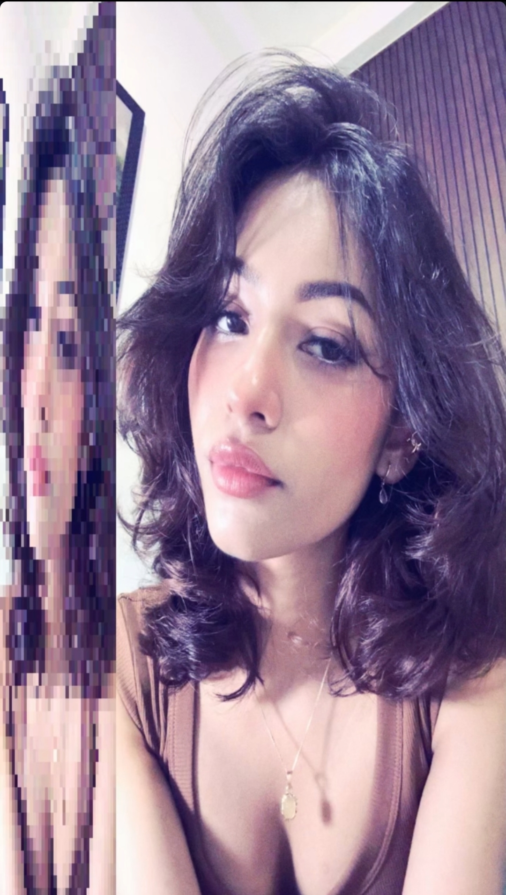
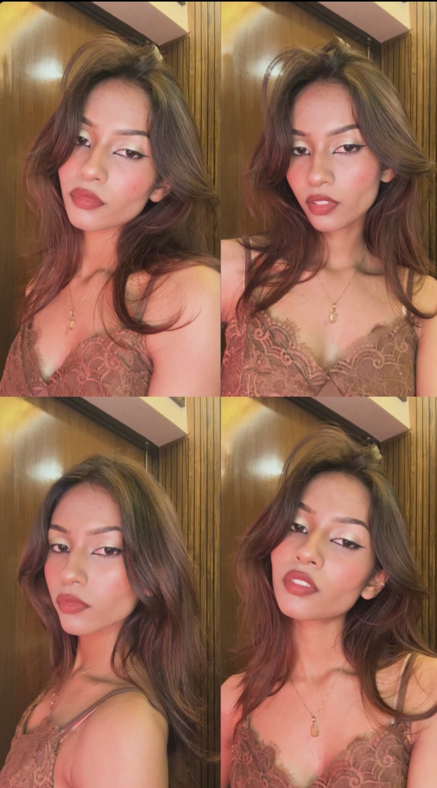
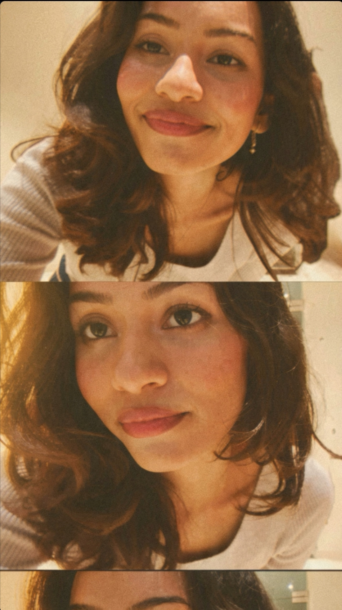
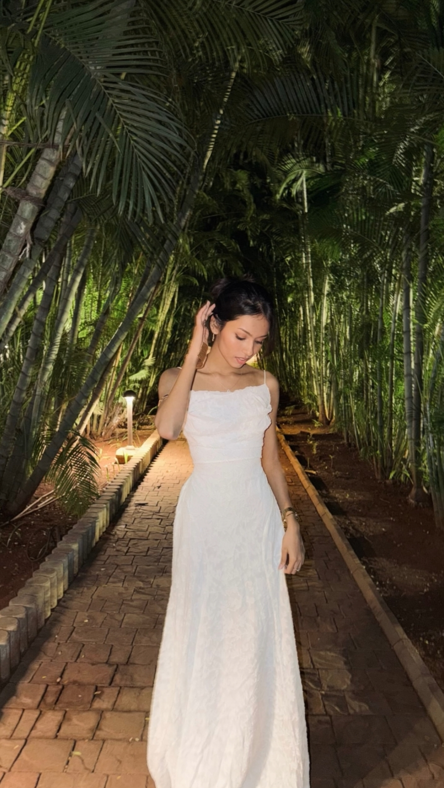
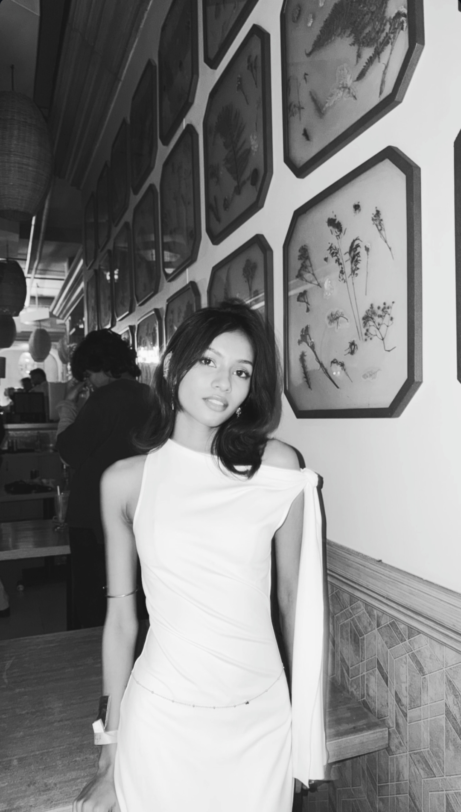
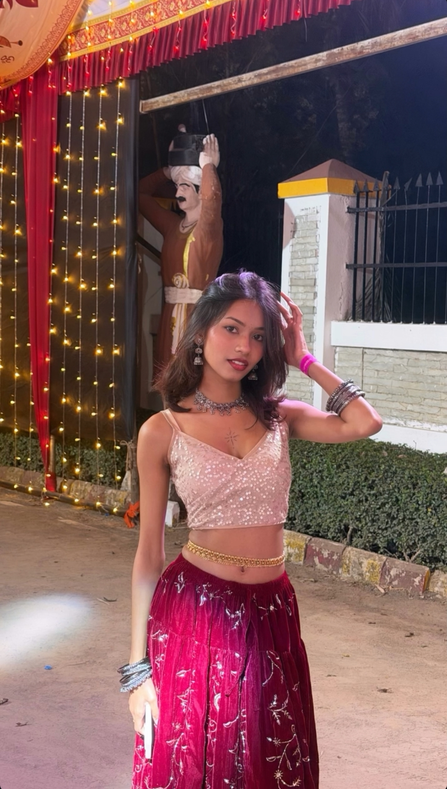
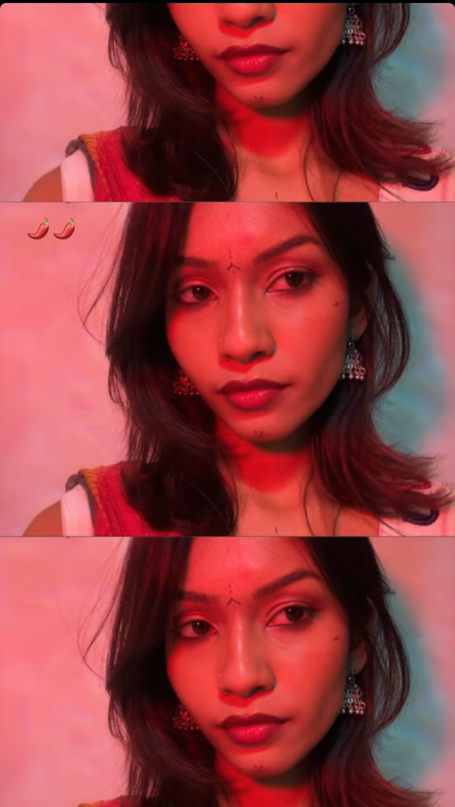

Light, held still.PORTRAIT / 01
A thought that stayed
For Dhanashree.
When I saw you for the first time, something in me paused. The moment passed; the feeling stayed.
Begin ↘Soundtrack begins
as you scroll down.
as you scroll down.
portrait / 01D.
portrait / light study
scroll to continue
THE IMPRESSION
01 — THE FIRST IMPRESSION
The image passed.
The afterthought stayed.
When I saw you for the first time, I couldn’t look away. I can’t explain every reason someone stays in the mind; I only know that you did.
I don’t know you yet, and I won’t pretend otherwise. But I found you genuinely beautiful, and wanted to express that with more care than a passing compliment.
“A moment can end without becoming insignificant.”
02 — THE PORTRAIT
Beauty, before language.
A face, a gesture, the quiet way light settles in a frame. Sometimes attention arrives before explanation. The sentence is simple; the pause before it was not.

The image, without embellishment.Admiration, without assumption.
“
एक ख़याल
कुछ चेहरे पहली नज़र में ही दिल में उतर जाते हैं,
वक़्त गुज़र भी जाए, वो ख़यालों में ठहर जाते हैं।Some faces find their way into the heart in a single glance; time may pass, but they linger in every quiet thought.
03 — THE AFTERIMAGE
A moment, held
in light.
Each moment holds its own quiet grace. Here, they simply exist as they are—unhurried, natural, and true to that first glimpse.

The shape of a moment.PORTRAIT / 02
A quiet glance.PORTRAIT / 03
The detail that stayed.PORTRAIT / 04
Softness and shadow.PORTRAIT / 05

The frame, unhurried.PORTRAIT / 06

Light at the edges.PORTRAIT / 07

A moment without words.PORTRAIT / 08

Stillness in the frame.PORTRAIT / 09

One passing instant.PORTRAIT / 10
Grace in the pause.PORTRAIT / 11
An afterthought that lingered.PORTRAIT / 12
The images that stayed.A moment, in sequence
THE AFTERIMAGEWhat stayed after looking
DHANASHREE / THE AFTERTHOUGHT
Stay with the image
Portrait sequence
01 / 04
MOTION / MEMORY
What stillness
cannot hold.
A smile, a glance, the effortless cadence of motion. Moving frames capture an entirely different kind of presence. Each moment loops quietly in its own stillness.
Muted · Tap for sound
Motion study 01A smile in motion
Muted · Tap for sound
Motion study 02A candid pause
Muted · Tap for sound
Motion study 03A living moment
A few seconds can hold more than a thousand words.
AFTER THE IMAGE
What remained
after I looked away.
When I saw you for the first time, the moment was brief.
Something about it followed me into the ordinary hours.
I won’t name it fate. I don’t know you well enough for that.
I will call it attraction—and let that truth be enough, for now.
A NOTE, WITHOUT DRAMA
A small,
honest beginning.
Dhanashree, when I saw you for the first time, I found you truly beautiful. I don’t know you yet, and I won’t pretend a single moment tells the whole story.
I made this page because that first impression stayed with me, and I wanted to express it with thought and care. Just an Unknown MAN. If you’d like to talk sometime, I’d be glad to introduce myself. If not, I completely understand.
With warmth and respect,
Unknown MAN
Unknown MAN
No assumptions. No expectation.
Made with respect.
Made with respect.